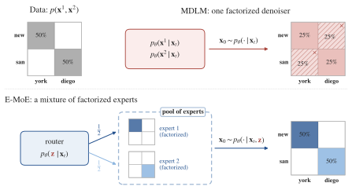
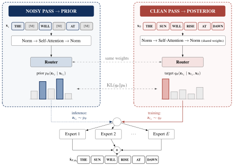
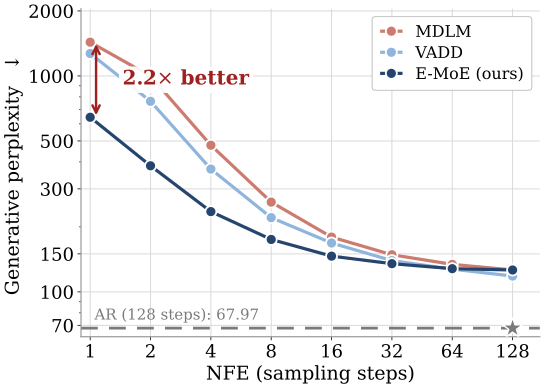
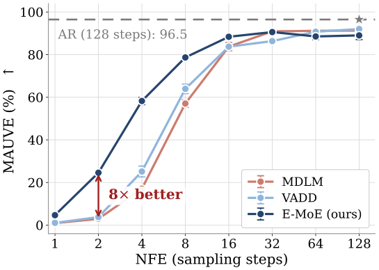
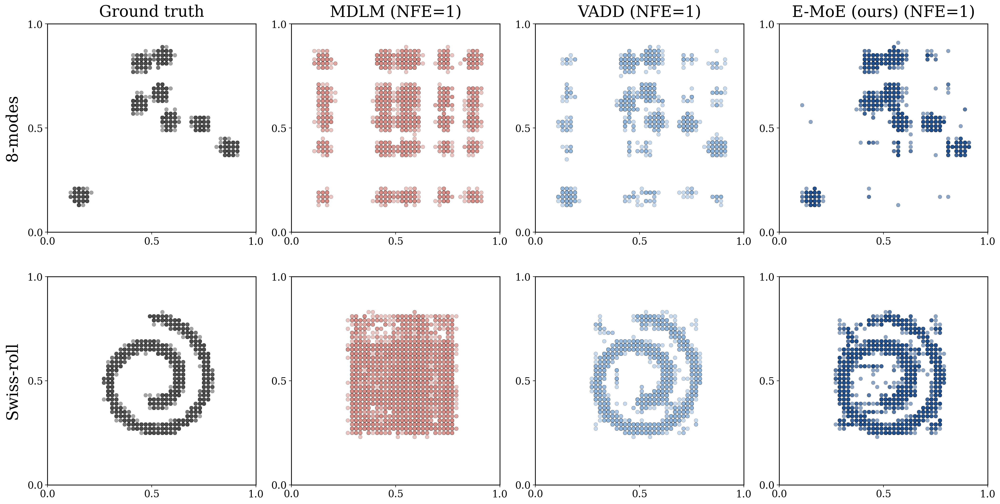

Masked diffusion models (MDMs) generate sequences by progressively unmasking several tokens per denoising step, but their reverse process is typically factorized over positions, limiting sample quality in the few-step regime where diffusion's speed advantage over autoregressive decoding matters most. A recent line of work introduces a continuous Gaussian latent, trained as a variational autoencoder, to capture correlations across positions, but such approaches are prone to posterior collapse, where the latent is silently ignored. We propose Enhanced Mixture-of-Experts (E-MoE), which builds the reverse process as a mixture of factorized distributions over a discrete shared latent given by the expert-routing decisions of a Mixture-of-Experts (MoE) backbone, without increasing active parameters over the factorized baseline. Across synthetic multi-modal benchmarks, binarized MNIST, and LM1B, E-MoE improves few-step generation over factorized baselines.
A masked diffusion model conditions on the whole sequence, but at every step it predicts an independent marginal for each masked position. Sampling several positions from these marginals treats them as conditionally independent and discards the dependencies between them — an error that grows with the number of tokens unmasked at once, precisely where parallel unmasking would pay off.
E-MoE overcomes this with a discrete shared latent: the expert-routing decisions an MoE backbone already computes. Each expert is still factorized, but tokens unmasked in the same step are drawn from the same mixture component, and the mixture over routes recovers the joint distribution.

E-MoE builds the reverse process as a mixture of factorized distributions over a discrete latent $\mathbf{z}$: $\;p_\theta(\mathbf{x}_s\mid\mathbf{x}_t)=\sum_{\mathbf{z}} p_\theta(\mathbf{z}\mid\mathbf{x}_t)\prod_{\ell} p_\theta(\mathbf{x}^\ell_s\mid\mathbf{x}_t,\mathbf{z})$. The latent is the per-token, per-layer routing decision of an MoE backbone, so no extra network is needed. The same router evaluated on the noisy sequence is the learned, data-dependent prior $p_\theta(\mathbf{z}\mid\mathbf{x}_t)$, and evaluated with the clean sequence it is the training-time posterior $q_\theta(\mathbf{z}\mid\mathbf{x}_t,\mathbf{x}_0)$.

Training minimizes reconstruction of the masked tokens under routes drawn from the posterior, plus a router-matching term: a sum of categorical KL divergences between the clean and noisy routers over all layers and positions. Discrete routes are sampled with the Gumbel-softmax trick and a straight-through estimator. At sampling time the route is drawn from the prior in the same forward pass, so one NFE is one forward pass.
| MDLM | VADD | E-MoE (ours) | |
|---|---|---|---|
| Reverse process | $\prod_\ell p_\theta(\mathbf{x}^\ell\mid\mathbf{x}_t)$ | $\int p(\mathbf{z})\prod_\ell p_\theta(\mathbf{x}^\ell\mid\mathbf{x}_t,\mathbf{z})\,d\mathbf{z}$ | $\sum_{\mathbf{z}} p_\theta(\mathbf{z}\mid\mathbf{x}_t)\prod_\ell p_\theta(\mathbf{x}^\ell\mid\mathbf{x}_t,\mathbf{z})$ |
| Latent space | — | $\mathbb{R}^d$ | $\{1,\dots,E\}^{L\times D}$ |
| Latent is chosen | — | once per sequence | per token and layer |
| Learned, data-dependent prior | ✗ | ✗ | ✓ |
| Posterior $q$ comes from | — | VAE (additional net) | the same net |
| Forward passes per training step | 1 | 2 | 2 |
| Forward passes per sampling step | 1 | 1 | 1 |
All models share the same small DiT backbone and are trained on LM1B for 1M steps at global batch 512; E-MoE uses as many active parameters per token as MDLM. The gain is largest where the factorization barrier binds: at NFE = 1 and 2, E-MoE lowers generative perplexity by 2× or more relative to every baseline, including the capacity-matched MDLM-MoE, at the same sample entropy, and at NFE = 2 it reaches a MAUVE of 24.6% against 3.0% for MDLM and 3.8% for VADD.


| NFE | MDLM | SEDD | VADD | BD3-LM | MDLM-MoE | E-MoE (ours) |
|---|---|---|---|---|---|---|
| 1 | 1440 ± 13 / 4.37 | 1604 ± 14 / 4.38 | 1279 ± 20 / 4.35 | — | 1293 ± 13 / 4.33 | 644 ± 6 / 4.35 |
| 2 | 993 ± 19 / 4.37 | 1065 ± 16 / 4.38 | 769 ± 11 / 4.33 | — | 816 ± 14 / 4.33 | 379 ± 5 / 4.35 |
| 4 | 469 ± 4 / 4.36 | 461 ± 2 / 4.35 | 372 ± 2 / 4.33 | — | 383 ± 2 / 4.32 | 235 ± 3 / 4.34 |
| 8 | 260.0 ± 0.8 / 4.35 | 242.5 ± 5.4 / 4.33 | 223.6 ± 5.5 / 4.33 | 1130.616 / 4.34 | 214.7 ± 1.2 / 4.32 | 174.8 ± 2.1 / 4.34 |
| 16 | 179.4 ± 3.1 / 4.35 | 167.4 ± 3.5 / 4.33 | 165.7 ± 1.5 / 4.33 | 1004.18 / 4.32 | 149.0 ± 3.1 / 4.32 | 148.4 ± 2.0 / 4.34 |
| 32 | 149.9 ± 1.9 / 4.35 | 138.0 ± 1.2 / 4.33 | 141.1 ± 2.5 / 4.32 | 790.74 / 4.29 | 125.1 ± 1.3 / 4.33 | 135.3 ± 1.8 / 4.34 |
| 64 | 133.7 ± 2.0 / 4.35 | 124.2 ± 1.5 / 4.33 | 126.6 ± 0.6 / 4.32 | — | 112.4 ± 1.1 / 4.33 | 130.1 ± 0.8 / 4.34 |
| 128 | 127.6 ± 1.3 / 4.35 | 118.9 ± 1.2 / 4.33 | 117.8 ± 0.6 / 4.32 | — | 107.0 ± 1.4 / 4.32 | 124.9 ± 1.6 / 4.34 |

@article{ivanov2026emoe,
title = {E-MoE: Enhanced Mixture-of-Experts for Non-Factorized Diffusion Language Models},
author = {Ivanov, Arseny and Kolesov, Alexander and Korotin, Alexander and
Oseledets, Ivan and Goncharov, Mikhail},
journal = {arXiv preprint arXiv:2609.37533},
year = {2026}
}